data_file <- "D:/OUCRU/hfmd/data/hfmd_sero.rds"2023 HCMC HMFD outbreak
library(dplyr)
library(stringr)
library(purrr)
library(tidyr)
library(magrittr)
library(mgcv)
library(scam)Warning: package 'scam' was built under R version 4.5.1gam2 <- function(..., data) {
out <- mgcv::gam(..., data = data, method = "REML")
out$data <- data
out
}scam2 <- function(..., data) {
out <- scam::scam(..., data = data)
out$data <- data
out
}hfmd <- data_file |>
readRDS() |>
as_tibble() |>
mutate(collection = id |>
str_remove(".*-") |>
as.numeric() |>
divide_by(1e4) |>
round(),
col_date2 = as.numeric(col_date),
across(pos, ~ .x > 0))predict2 <- function(x, ci = .95, le = 512, m = 100) {
p <- (1 - ci) / 2
link_inv <- x$family$linkinv
dataset <- x$data
n <- nrow(dataset) - length(x$coefficients)
age_range <- range(dataset$age)
ages <- seq(age_range[1], age_range[2], le = le)
x |>
predict(data.frame(age = ages), se.fit = TRUE) |>
extract(c("fit", "se.fit")) %>%
c(age = list(ages), .) |>
as_tibble() |>
mutate(lwr = m * link_inv(fit + qt( p, n) * se.fit),
upr = m * link_inv(fit + qt(1 - p, n) * se.fit),
fit = m * link_inv(fit)) |>
select(- se.fit)
}plot_predictions <- function(x) {
with(x, {
plot(age, fit, ylim = c(0, 100), type = "n",
xlab = "age (years)", ylab = "seroprevalence")
polygon(c(age, rev(age)), c(lwr, rev(upr)), border = NA, col = adjustcolor(4, .2))
lines(age, fit, col = 4)
})
}hfmd |>
filter(collection < 7) %>%
gam2(pos ~ s(age), binomial, data = .) |>
predict2() |>
plot_predictions()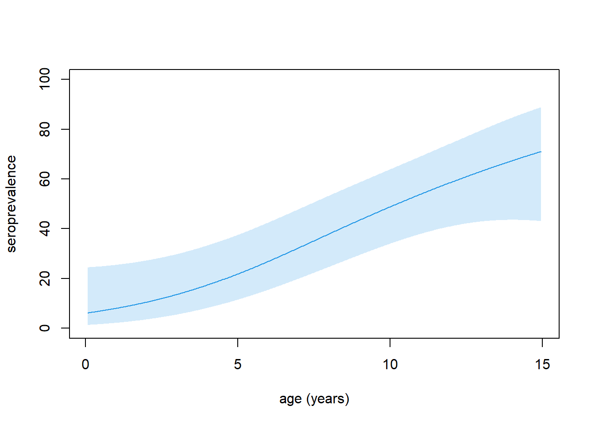
hfmd |>
filter(collection < 7) %>%
scam2(pos ~ s(age, bs = "mpi"), binomial, data = .) |>
predict2() |>
plot_predictions()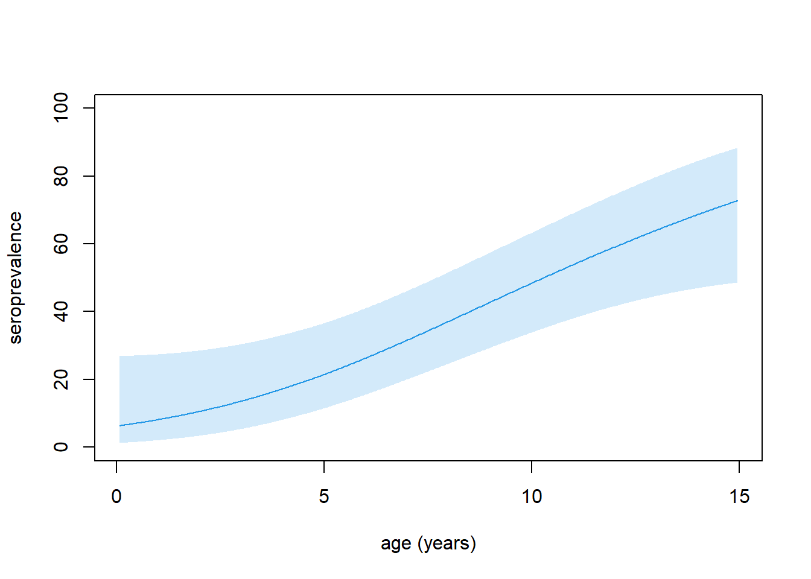
m <- scam2(pos ~ s(age) + s(col_date2, bs = "mpi"), binomial, data = hfmd)mean_col_dates <- hfmd |>
group_by(collection) |>
summarise(mean_col_date = mean(col_date2)) |>
pull(mean_col_date)predict3 <- function(x, newdata, ci = .95, le = 512, m = 100) {
p <- (1 - ci) / 2
link_inv <- x$family$linkinv
dataset <- x$data
n <- nrow(dataset) - length(x$coefficients)
x |>
predict(newdata, se.fit = TRUE) |>
extract(c("fit", "se.fit")) %>%
c(age = list(ages), .) |>
as_tibble() |>
mutate(lwr = m * link_inv(fit + qt( p, n) * se.fit),
upr = m * link_inv(fit + qt(1 - p, n) * se.fit),
fit = m * link_inv(fit)) |>
select(- se.fit)
}ages <- seq(0, 15, le = 512)
p <- map(mean_col_dates, ~ predict3(m, data.frame(age = ages, col_date2 = .x))) plot_predictions(p[[1]])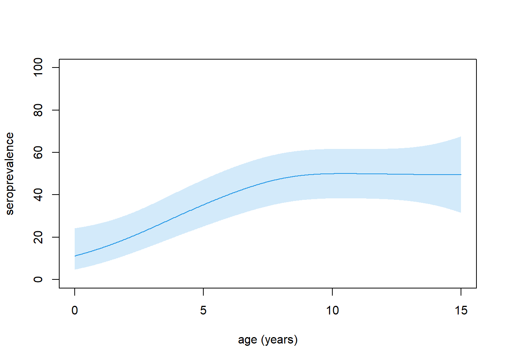
plot_predictions(p[[2]])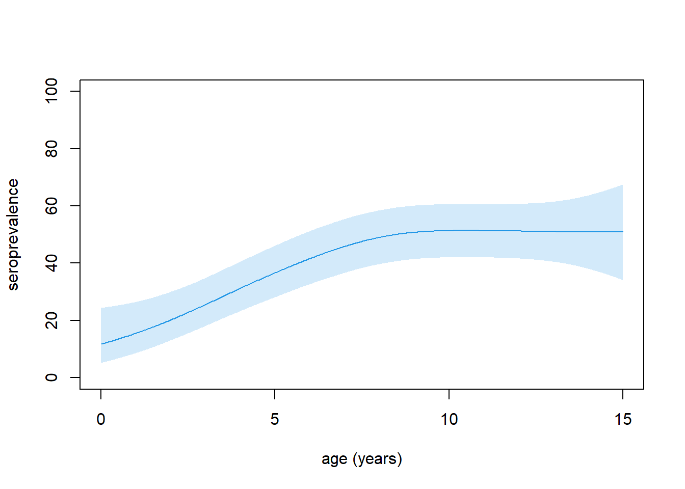
plot_predictions(p[[3]])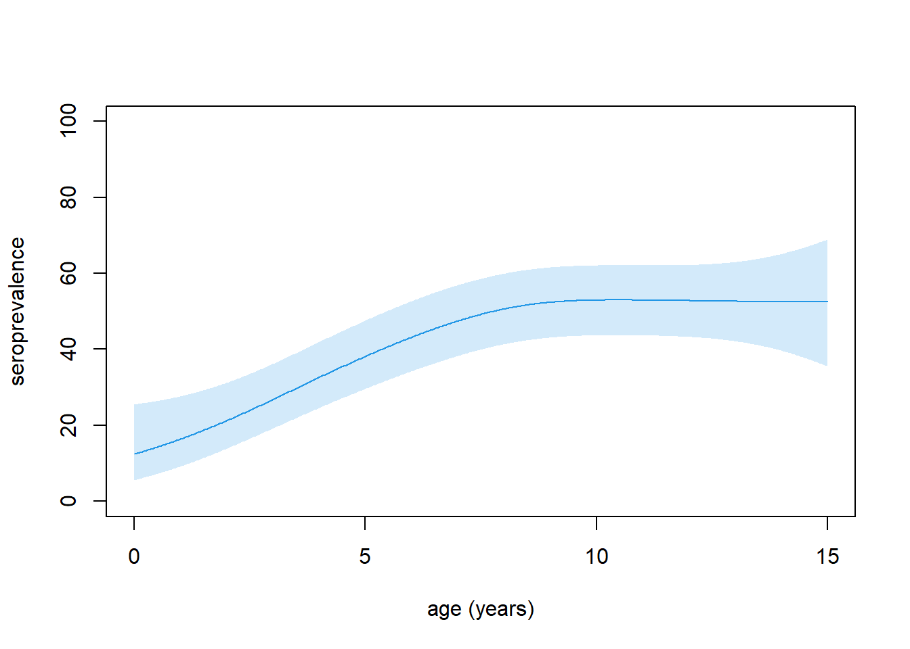
plot_predictions(p[[4]])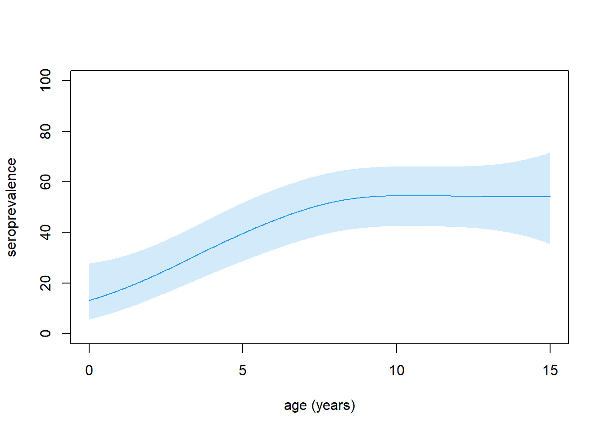
New method
beta_from_alpha <- function(alpha, mu) alpha * (1 - mu) / mu
beta_parameters <- function(L, U, mu, ci = .95, interval = c(.01, 1e3), ...) {
p <- (1 - ci) / 2
objective <- function(alpha) {
beta <- beta_from_alpha(alpha, mu)
q025 <- qbeta(p, alpha, beta)
q975 <- qbeta(1 - p, alpha, beta)
(q025 - L)^2 + (q975 - U)^2
}
alpha_est <- optimize(objective, interval, ...)$minimum
c(alpha = alpha_est, beta = beta_from_alpha(alpha_est, mu))
}simulate_values <- function(col = 6, ages = seq(0, 15, le = 512),
ci = .95, interval = c(.01, 1e3), n = 100, ...) {
p <- (1 - ci) / 2
dat <- filter(hfmd, collection == col)
mod <- gam(pos ~ s(age), binomial, dat)
df <- nrow(dat) - length(coef(mod))
link_inv <- family(mod)$linkinv
predict(mod, list(age = ages), se.fit = TRUE) |>
magrittr::extract(c("fit", "se.fit")) %>%
c(age = list(ages), .) |>
as_tibble() |>
mutate(lwr = link_inv(fit + qt( p, df) * se.fit),
upr = link_inv(fit + qt(1 - p, df) * se.fit),
fit = link_inv(fit)) |>
select(- se.fit) |>
mutate(est = pmap(list(lwr, upr, fit), beta_parameters, ci, interval, ...)) |>
unnest_wider(est) |>
mutate(meancheck = map2_dbl(alpha, beta, ~ .x / (.x + .y)),
rndvalues = map2(alpha, beta, ~ rbeta(n, .x, .y)))
}mean_col_dates <- hfmd |>
group_by(collection) |>
summarise(mean_col_date = mean(col_date2)) |>
pull(mean_col_date)set.seed(123)
simulations <- map(6:9, simulate_values)l <- length(simulations[[1]]$rndvalues[[1]])
sim_data <- map2(simulations, mean_col_dates,
~ .x |>
select(age, rndvalues) |>
mutate(coll_time = list(rep(.y, l)))) |>
bind_rows()N <- length(mean_col_dates) * l
ci <- .95
p <- (1 - ci) / 2
mod <- sim_data |>
filter(age == 0) |>
select(-age) |>
map(unlist) |>
as_tibble() |>
mutate(pos = rbinom(N, 1, rndvalues)) %>%
scam(pos ~ s(coll_time, bs = "mpi"), binomial, .)
df <- N - length(coef(mod))
link_inv <- family(mod)$linkinv
mod |>
predict(list(coll_time = mean_col_dates), se.fit = TRUE) |>
magrittr::extract(c("fit", "se.fit")) %>%
c(coll_time = list(mean_col_dates), .) |>
as_tibble() |>
mutate(lwr = link_inv(fit + qt( p, df) * se.fit),
upr = link_inv(fit + qt(1 - p, df) * se.fit),
fit = link_inv(fit)) |>
select(- se.fit)# A tibble: 4 × 4
coll_time fit lwr upr
<dbl> <dbl[1d]> <dbl[1d]> <dbl[1d]>
1 19349. 0.0513 0.0280 0.0921
2 19457. 0.0513 0.0280 0.0922
3 19580. 0.252 0.197 0.316
4 19700. 0.256 0.199 0.321 28”:
models <- sim_data |>
group_by(age) |>
group_map(~ .x |>
map(unlist) |>
as_tibble() |>
mutate(pos = rbinom(N, 1, rndvalues)) %>%
scam(pos ~ s(coll_time, bs = "mpi"), binomial, .))a <- map2(models,
N - map_int(models, ~ length(coef(.x))),
~{
linkinv <- family(.x)$linkinv
.x |>
predict(list(coll_time = mean_col_dates), se.fit = TRUE) |>
magrittr::extract(c("fit", "se.fit")) %>%
c(coll_time = list(mean_col_dates), .) |>
as_tibble() |>
mutate(lwr = link_inv(fit + qt( p, .y) * se.fit),
upr = link_inv(fit + qt(1 - p, .y) * se.fit),
fit = link_inv(fit)) |>
select(- se.fit)
} ) |>
setNames(unique(sim_data$age)) |>
bind_rows(.id = "age") |>
mutate(across(age, as.numeric))a |> arrange(coll_time, age)# A tibble: 2,048 × 5
age coll_time fit lwr upr
<dbl> <dbl> <dbl[1d]> <dbl[1d]> <dbl[1d]>
1 0 19349. 0.0762 0.0448 0.127
2 0.0294 19349. 0.0611 0.0351 0.104
3 0.0587 19349. 0.0427 0.0201 0.0881
4 0.0881 19349. 0.0642 0.0341 0.117
5 0.117 19349. 0.0490 0.0210 0.110
6 0.147 19349. 0.0510 0.0278 0.0919
7 0.176 19349. 0.0494 0.0209 0.112
8 0.205 19349. 0.0859 0.0541 0.134
9 0.235 19349. 0.0494 0.0209 0.112
10 0.264 19349. 0.0411 0.0208 0.0795
# ℹ 2,038 more rowsa |>
mutate(across(coll_time, round)) |>
filter(coll_time == 19349) |>
with({
plot(age, fit, ylim = 0:1)
})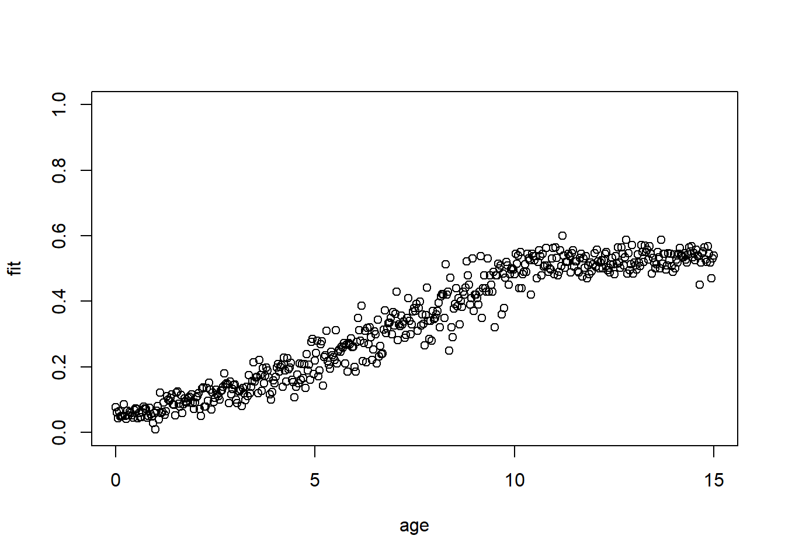
ages <- seq(0, 15, le = 512)
a |>
mutate(across(coll_time, round)) |>
filter(coll_time == 19349) %>%
gam(fit ~ s(age), betar, .) |>
predict(list(age = ages), "response") %>%
plot(ages, .,type = "l",ylim = 0:1)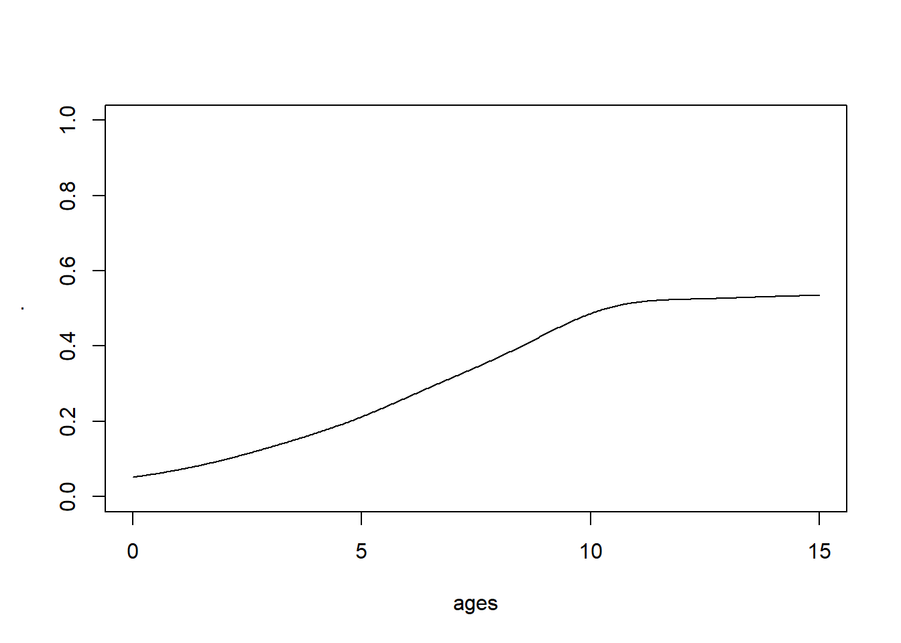
a |>
mutate(across(coll_time, round)) |>
filter(coll_time == 19349) |>
with({
plot(age, fit, ylim = 0:1)
})
a |>
mutate(across(coll_time, round)) |>
filter(coll_time == 19457) |>
with({
plot(age, fit, ylim = 0:1)
})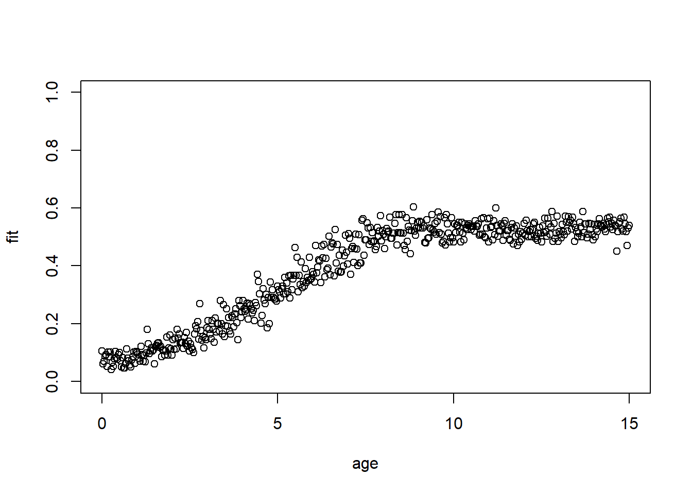
a |>
mutate(across(coll_time, round)) |>
filter(coll_time == 19580) |>
with({
plot(age, fit, ylim = 0:1)
})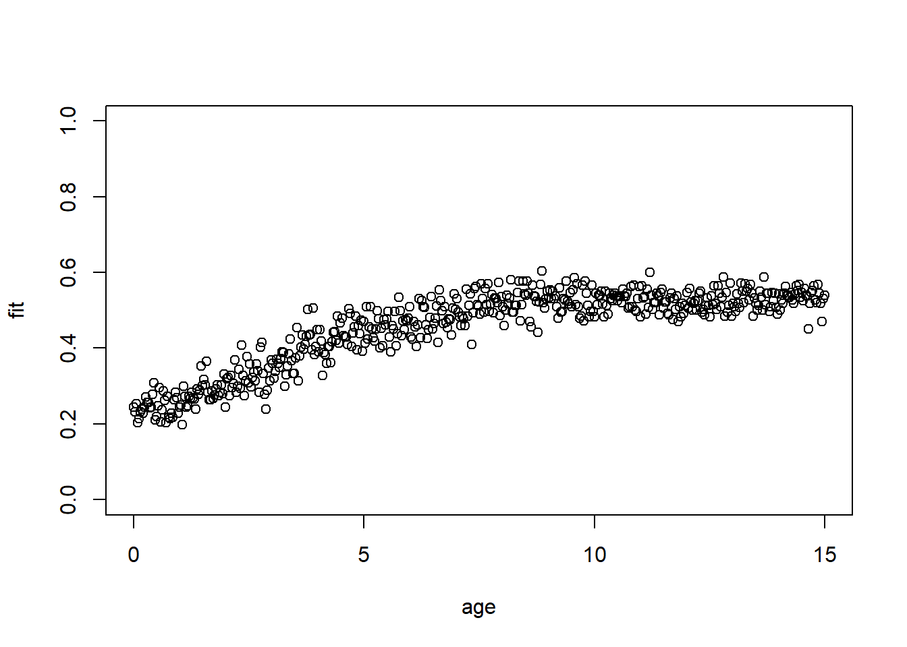
a |>
mutate(across(coll_time, round)) |>
filter(coll_time == 19700) |>
with({
plot(age, fit, ylim = 0:1)
})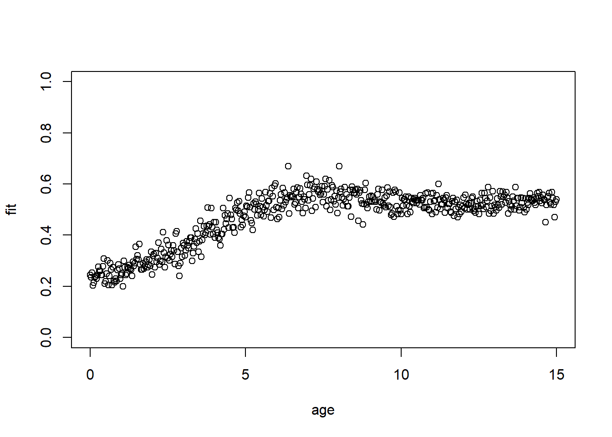
Plot
smothh <- function(timee){
dt_fit <- a |>
mutate(across(coll_time, round)) |>
filter(coll_time == timee)
mod_fit <- gam(fit ~ s(age, k = 30), data = dt_fit)
mod_lwr <- gam(lwr ~ s(age, k = 30), data = dt_fit)
mod_upr <- gam(upr ~ s(age, k = 30), data = dt_fit)
# Predict smooths
tibble(age = seq(min(dt_fit$age), max(dt_fit$age), length.out = 500)) %>%
mutate(
fit = predict(mod_fit, newdata = .),
lwr = predict(mod_lwr, newdata = .),
upr = predict(mod_upr, newdata = .)
)
}library(tidyverse)
map(c(19349,19457,19580,19700),smothh) |>
bind_rows() %>%
mutate(col_time = rep(c(19349,19457,19580,19700),each = 500),
col_time = factor(col_time,
levels = c(19349,19457,19580,19700),
labels = c("Dec 2022",
"Apr 2023",
"Aug 2023",
"Dec 2023"))) %>%
ggplot(aes(x = age, y = fit)) +
geom_ribbon(aes(ymin = lwr, ymax = upr), fill = "blue", alpha = 0.3) +
geom_line(color = "blue") +
facet_wrap(~col_time,nrow = 1)+
labs(y = "Smoothed fit", x = "Age") +
ylim(c(0,1))+
theme_minimal()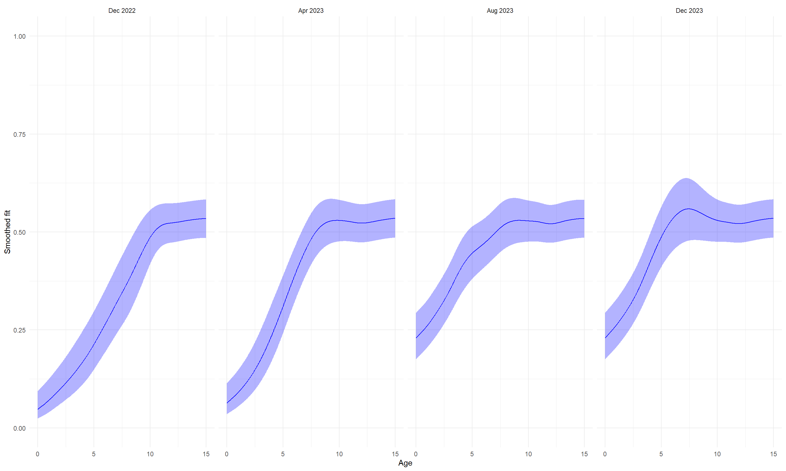